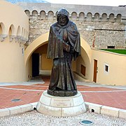

княжество Монако
Мона́ко (фр. Monaco), официальное название — Кня́жество Мона́ко (фр. Principauté de Monaco) — карликовое государство, ассоциированное с Францией, расположенное на юге Европы на берегу Лигурийского моря; на суше граничит с Францией[7]. Является одной из самых маленьких и наиболее густонаселённых стран мира. Княжество широко известно благодаря казино в Монте-Карло и проводимому здесь этапу чемпионата Формулы-1 — «Гран-при Монако».
Страна является членом международных организаций: ООН (с 1993 года), ОБСЕ, Совета Европы (с 2004 года), Интерпола, ЮНЕСКО, ВОЗ. Главный офис Международной гидрографической организации находится в Монако. Монако имеет 12 дипломатических миссий в Западной Европе и постоянных представителей в ООН и Совете Европы. В 106 городах в 45 странах находятся почётные консульства Монако. 66 стран имеют генеральные консульства, консульства или почётные консульства в Монако.
Не являясь членом Европейского союза и НАТО, Монако тесно связано с экономическим аппаратом ЕС через свой таможенный союз с Францией и опорой на евро в качестве официальной валюты.